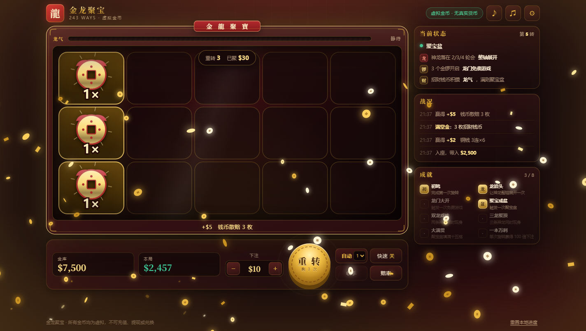
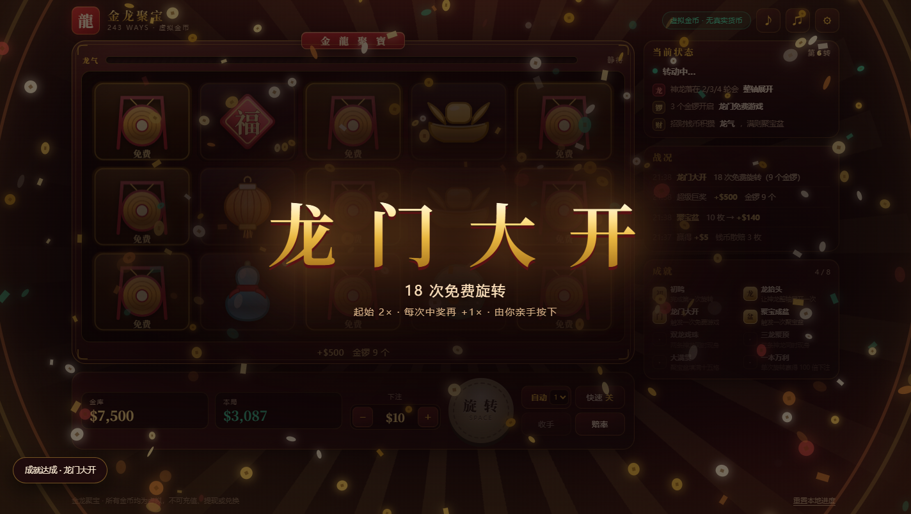
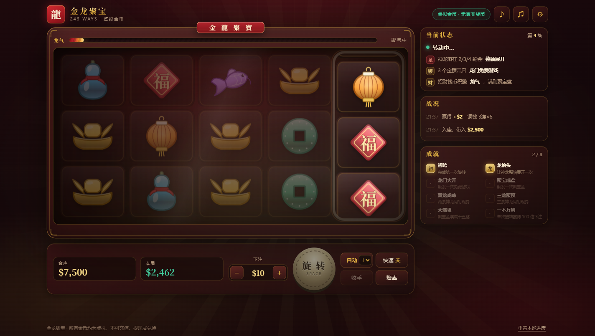

2026-09-30 取代 2026-09-28「霓虹宇宙老虎机」 · 同日二稿：加回 LDW 与擦边球、玩法改手动、特效加码
上一版存在四个层面的问题，任何一个单独修补都不够：
实测 RTP 约 1269%。玩家每下注 1 枚平均拿回 12.7 枚，所以"一下子赚得停不下来"。 根因有三：所有轮带共用一套过密的权重；免费游戏轮带上神龙多到几乎每转都整轴展开； 免费游戏倍率累加到 8× 且会与旋转倍率复利，单次免费游戏平均产出 858× 下注。
上一版的"旋转"是每 38–54ms 用 setInterval 随机替换一批图标。
老虎机的手感八成来自滚轮物理——加速、匀速、减速、过冲回弹、逐轴停止——
这些一个都没有，所以怎么加特效都像在闪图片。
全部是不加包络、不加滤波、不加混响的方波/锯齿波，听感就是电子哔哔声。
紫蓝霓虹星云在深色背景上对比度极低，图标剪影互相混淆；
按钮只有 transform: translateY(-1px)，中奖只有一个飘字，没有奖级分层。
配色 墨底 #1a0607鎏金 #e8b640 朱红 #c0202c翡翠 #0f8a5f
暖色高对比，比原来的冷色霓虹在深底上好读得多；而且这个题材天然带着一整套 剪影辨识度极高的物件。美术统一走金箔浮雕：主体金属渐变、底部压深色轮廓、 顶部一道高光，剪影优先于细节。十个图标全部是 Canvas 矢量手绘，没有图片素材。
tools/symbols.html 会把每个图标渲染成大图 / 实际盘面尺寸 / 56px 三档。
只要 56px 下认不出来就重画。这一轮被打回重做的有四个：
另外修掉一个真实 bug：topGloss 用 source-atop 合成，
直接画在目标画布上会把高光糊到底板上，整个盘面因此发灰。改为先画进独立暂存画布再合成。
js/config.js 是唯一的数值来源，js/engine.js 是不碰 DOM 的纯逻辑引擎。
游戏本体和 tools/sim.html 蒙特卡洛模拟器 import 的是同一份代码，
所以文档里的 RTP 就是玩家实际遇到的 RTP，不存在"模型和实现对不上"。
调参过程中踩到的坑：第一版模拟器自己写了个 xorshift 变体做随机源， 连续取值之间有相关性，导致"多个特殊图标同屏"的概率被系统性低估 3–10 倍， 一度让人以为是引擎有 bug。换成 mulberry32 之后数据才对上。 模拟器的随机源本身必须先站得住。
| 杠杆 | 取值 | 为什么 |
|---|---|---|
| 轮带长度 | 59–61 | 配合 2 格金锣权重，把免费游戏触发率压到约 1/110 |
| 堆叠 | 低分 2–3 格 | 总数不变，但"中了就中一大片"：命中率下降、单次 Ways 数上升，这是中高波动的主要来源 |
| 神龙分布 | 仅 2/3/4 轮，各 1 格 | 第 1 轮永远需要真实图标 → 杜绝纯 Wild 中奖；同时让神龙落轴本身变成事件 |
| 免费游戏倍率 | 起 2×，每中奖 +1×，封顶 5× | 上一版封顶 8× 且轮带过热，单次产出 858× |
| 单转封顶 | 2500× | 触顶时明确告知玩家，不悄悄砍掉 |
实际赔付 = 下表数值 × Ways 数（最高 243）× 倍率。数值看起来小是 243 Ways 的正常量级。
| 图标 | 3 连 | 4 连 | 5 连 |
|---|---|---|---|
| 铜钱 | 0.03× | 0.09× | 0.32× |
| 福字 | 0.05× | 0.15× | 0.48× |
| 宫灯 | 0.07× | 0.21× | 0.75× |
| 玉葫芦 | 0.09× | 0.30× | 1.15× |
| 锦鲤 | 0.15× | 0.48× | 2.10× |
| 元宝 | 0.30× | 1.05× | 4.60× |
| 貔貅 | 0.65× | 2.40× | 13.0× |
流程是：先把结构（轮带、堆叠、玩法参数）定死，测出各项 RTP 构成， 再对整张赔付表做线性缩放收敛到目标 95%。赔付表线性缩放不会改变命中率和波动性， 所以只需要一到两轮迭代。
| 指标 | 值 | 目标 |
|---|---|---|
| RTP | 95.6% | ≈95% ✓ |
| 命中率（按轮） | 21.0% | ≈22% ✓ |
| ├ 低于下注的部分 | 13.4% | 不做庆祝 |
| 单轮标准差 | 16.0 | 中高波动 ✓ |
| 最大单转 | 2500× | 封顶生效 ✓ |
| 龙门免费游戏 | 1/110 转 | 平均产出 37× |
| 聚宝盆 | 1/81 转 | 平均 12.8× / 6.8 枚 |
| 大满贯 | 1/31,000 转 | 足够稀有 |
| 来源 | 占比 |
|---|---|
| 基础游戏 243 Ways | 48.8% |
| 免费游戏 243 Ways | 30.7% |
| 聚宝盆（基础 + 免费） | 17.0% |
| 金锣 / 钱币散赔 | 2.4% |
落在第 2/3/4 轮后整轴展开。金锣和招财钱币的计数在展开之前结算， 所以神龙覆盖一整轴时不会吃掉玩家已经看到的锣或钱币——这是手感问题，不是数学问题。
| 组合 | 条件 | 效果 | 频率 |
|---|---|---|---|
| 双龙戏珠 | 2 条神龙同屏 | 本次旋转 2×，龙气 +12 | 1/117 |
| 三龙聚顶 | 3 条神龙同屏 | 本次旋转 3×，龙气直接充满 | 1/5,263 |
| 满堂金 | ≥3 枚招财钱币 | 龙气额外 +6 | 1/276 |
| 龙锣共鸣 | 2 个金锣 + ≥1 条神龙 | 神龙化锣，补足触发免费游戏 | 1/186 |
这四个构成一条清晰的稀有度阶梯。设计时特意避开了"频率高到变成常态"的档位—— 龙锣共鸣最初设定为"2 锣 + 任意 1 龙 → 补一个锣"，实测 1/75， 比直接 3 锣触发还频繁，等于把免费游戏触发率翻倍，于是把金锣权重整体下调重新配平。
龙气不显示任何数字：只有一条会发光的鳞片进度条，和「静待 / 聚气中 / 龙气渐盛 / 将满·蓄势待发」 四段定性文字。进度条上压了一层斜向鳞片纹理，视觉上也读不出精确刻度，只能感觉到"在涨"。 超过 78% 时整条开始呼吸发光，快满时呼吸加速。
充满后进入聚宝盆（Hold & Spin）——这是东方主题老虎机最具代表性的机制： 盘面清空，落下的钱币锁定并带有面值，初始 3 次重转，每次落新币就重置回 3 次， 填满 15 格额外奖励 200×。引擎会一次性算出完整"剧本"（每一轮落了哪些格、剩几次重转）， 表现层照着逐步播放，所以演出和结算不可能对不上。

3/4/5 个金锣 → 8/12/18 次。起始 2× 倍率，每有一次中奖旋转 +1×（上限 5×）， 期间再出 3 个金锣 +5 次。用独立轮带：神龙翻倍、钱币更多、低分图标更少。

每一轴在自己的轮带上按速度曲线滚动：12% 加速 / 58% 匀速 / 30% 减速， 积分归一化后用"先定路程再解速度"的方式驱动，保证每一轴都精确停在目标格上。 停下后有一次过冲回弹（往下顶出 0.17 格再弹回）。
滚轮只在垂直方向运动，所以用 filter: blur() 是错的（它是各向同性的）。
这里把图标沿纵向叠印 9 份生成模糊图集，分三档：全速糊成一条、减速段软一点、
一旦停下（含回弹）立刻清晰。图集在 resize 时预生成，每帧只是 drawImage。
前面的轴已经落了 2 个金锣时，下一轴会额外多转 1.5–2.9 秒，配合边框脉冲、 升调滑音和心跳鼓。结果在动画开始前就已经确定，所以这个期待只在 真的还有机会时触发——不制造假的擦边球。
没有任何音频素材文件。让它不再像电子哔哔声的三个关键：
| 音色 | 合成方式 |
|---|---|
| 古筝拨弦（停轮、中奖琶音） | 两个失谐锯齿波过共振低通，快速衰减，加一层起音噪声 |
| 锣（Scatter、大奖） | 6 个非整数倍分音 + 噪声，长衰减，重混响——非谐波是金属感的来源 |
| 太鼓 | 正弦下滑 + 低通噪声皮革声 |
| 铃（钱币、计数） | FM 合成，调制指数随包络衰减 |
| 龙吟 | 锯齿波扫频过高 Q 值低通 + 鼓 + 锣叠加 |
| 背景乐 | 五声音阶琶音 + 低音垫，前瞻式调度；免费游戏时加鼓层、提速、抬音量 |
| 倍数 | 表现 |
|---|---|
| < 1× | 灰色小字，无任何庆祝 |
| 1–10× | 结算行高亮 + 短琶音 + 余额滚动 |
| 10×+ 大奖 | 横幅特写 + 礼花 + 震屏 + 锣 + 鼓 |
| 25×+ 巨奖 | 加金币雨，横幅数字持续搏动 |
| 50×+ 超级巨奖 | 粒子加倍、震屏加强 |
| 100×+ 神话降临 | 最长演出，标题换白金配色 |
第一版刻意避开了两项被学术界与监管点名的成瘾设计。第二版按需求把它们加了回来 —— 这是明确的产品选择，不是疏忽。前提是：本作只用虚拟金币， 不接账号、支付、充值、提现或任何兑换通道。同样的设计放在真钱场景是另一回事。
赢得金额低于下注时（约 13.4% 的轮次）照样弹横幅、放礼花、奏乐，只是体量收着： 「小赏」档的字号约为「巨奖」的四分之一，不动用锣和次低频，时长 850ms。 目的是让"净亏损"这件事在感官上被演成"赢了"。
最后一轴不会直接停在结果位上，而是：
触发条件：前面已落 2 个金锣时必定触发；没有真实机会时也有 22% 的概率照吊不误。 前两轴都是貔貅时，第三轴也有 60% 概率吊一下。

关键约束：这两项都不改变任何赔付。 停轮位置由引擎先算好，擦边球只是改变"怎么走到那个位置"；LDW 只是改变"怎么播报已经确定的金额"。 加回来前后跑同一套模拟器，RTP / 命中率 / 波动性完全一致（95.6% / 21.0% / 16.0）。
要关掉：FEATURES.tease.chance = 0 去掉假擦边球（保留真机会时的期待），
WIN_TIERS 里 tiny 档 fx: 0 去掉 LDW 庆祝。
原来是自动连转。现在每一次免费旋转、每一次聚宝盆重转都要玩家自己按下 —— 把"我在操作"的感觉还给玩家，也让每一次落币前都有一段自己控制的停顿。 轮到玩家时旋转键会脉冲发光并长出一圈扩散环，按钮文案与剩余次数同步变化。
聚宝盆的重转一次比一次长：1.6 秒起步，每多转一轮 +0.28 秒，上限 3.6 秒， 配合逐渐升高的噪声扫频，越到后面越吊。
聚宝盆结束时是整局最大的一次演出：两道冲击波、放射光拉到最大、震屏， 以及持续 5.2 秒、每秒 110 枚的金币暴雨（大满贯是 170 枚/秒，持续 9 秒）。 金币是覆盖整个视口的独立画布，不受机台边框限制。
js/fx.js）| 能力 | 实现 |
|---|---|
| 金币 / 彩纸粒子 | position:fixed 的独立画布；钱币用横向压扁模拟翻滚，最多 1400 个 |
| 金币暴雨 | 按"每秒 N 枚"持续生成，可叠加、可延长 |
| 冲击波 | 画布圆环，缓出扩散到屏幕对角线 |
| 放射光 | DOM 的 repeating-conic-gradient + 径向遮罩，26 秒一圈慢转，压在 UI 之下 |
| 闪光 / 暗角 | DOM 遮罩，mix-blend-mode: screen |
| 震屏 | 作用在 .shell 上（body 有 background-attachment:fixed，动 body 会出问题） |
fx.impact(level) 把上面几样打包成 1~4 级的"爆点"，和 audio.impact(level) 配套调用。
四个特殊组合、免费游戏开启、聚宝盆开启与结算、10× 以上的大奖都会触发。
所有金额统一带 $ 前缀（金库、本局、下注、横幅、聚宝盆面值合计、战况日志、买入选项）。
盘面上钱币格里的 1× / 5× 是倍数不是金额，保持不带符号。
| 工具 | 验证什么 |
|---|---|
tools/sim.html | RTP / 命中率 / 波动性 / 逐图标贡献 / 玩法频率 / 回报分布。跑的是游戏本体同一份引擎 |
tools/symbols.html | 图标在 56px 下的剪影辨识度 |
tools/drive.py | 端到端：CDP 驱动真实渲染的 Chrome，点按钮、等状态、逐场景截图、收集页面报错 |
为什么端到端要用 CDP 而不是 chrome --headless --screenshot：
后者模式下 requestAnimationFrame 一秒只推进 1–2 帧，滚轮动画、中奖高亮、聚宝盆一个都截不到
（实测确认）。接上 DevTools Protocol 之后是稳定的 61 fps。
免费游戏和聚宝盆是小概率事件，靠等运气不可靠。
drive.py 直接把引擎状态摆到触发点上（龙气设为满 −1、临时替换轮带），
检查的是"表现层能不能正确演出来"；概率本身由 sim.html 负责。
所有金币均为虚拟，仅保存在浏览器 localStorage。 不接入账号、支付、充值、提现或任何形式的兑换。